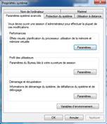

How to build a Argo component :
- Download BCOMDEVROOT.zip from J:
image:media/image1.png[image,width=318,height=134]
- Extract the content somewhere in your PC, e.g. C:2
- Open the System propriety panel

- Click on “variables d’environnement”
- Add a new variable called BCOMDEVROOT with the key equal to the location of BCOMDEVROOT data, see 2)
image:media/image3.png[image,width=195,height=215]image:media/image4.png[image,width=260,height=91]
- Save and close the panel
- Git Clone the two following repositories in your working directory anywhere you like:
- http://forge.b-com.com/git/argo/F-Argo/packages/ArgoComponent.git[http://forge.b-com.com/git/argo/F-Argo/packages/ArgoComponent.git]
- http://forge.b-com.com/git/argo/F-Argo/packages/ArgoComponentDemo.git[http://forge.b-com.com/git/argo/F-Argo/packages/ArgoComponentDemo.git]
- Open the two corresponding pro files with Qt creator. This gives you something like
image:media/image5.png[image,width=158,height=62]
- Important: click on ‘Projects’ on the left panel and for argoComponent (as active project) add a make build step with ‘install’ as argument. Do that for both debug and release configurations.
image:media/image6.png[image,width=415,height=178]
- Then click on Edit on the left panel and build first argoComponent (right-click + Run qmake + Clean + Rebuild)
- Then select argoComponentDemo as the active project (right-click) and build it the same way as above.
- Click on Run , you should get :
image:media/image7.png[image,width=281,height=218]
- Do the same procedure for the release configuration.